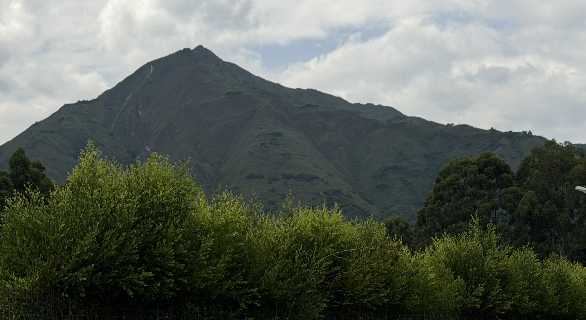
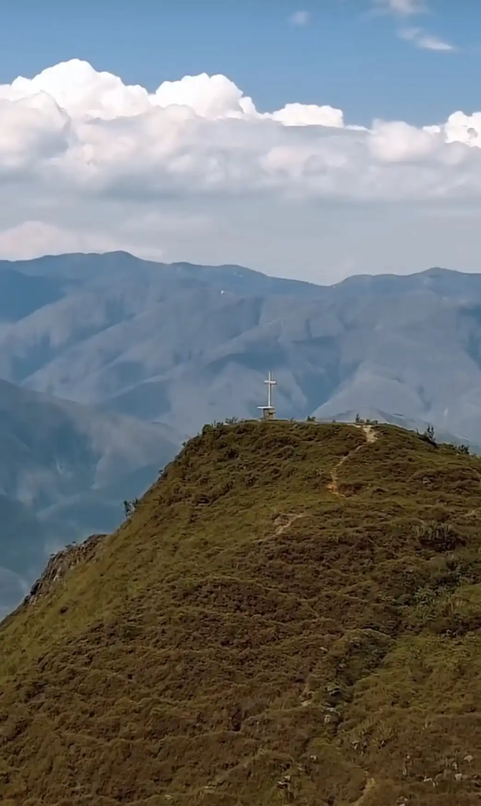
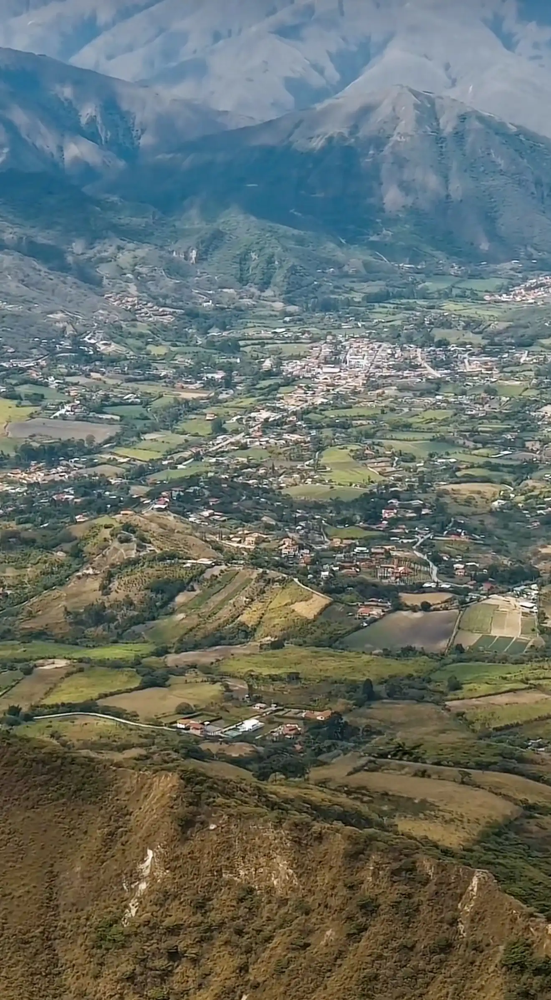
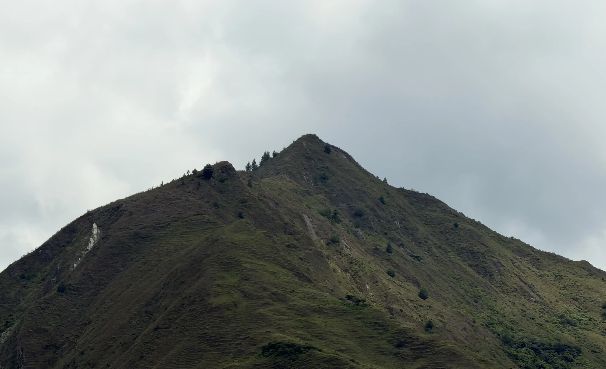
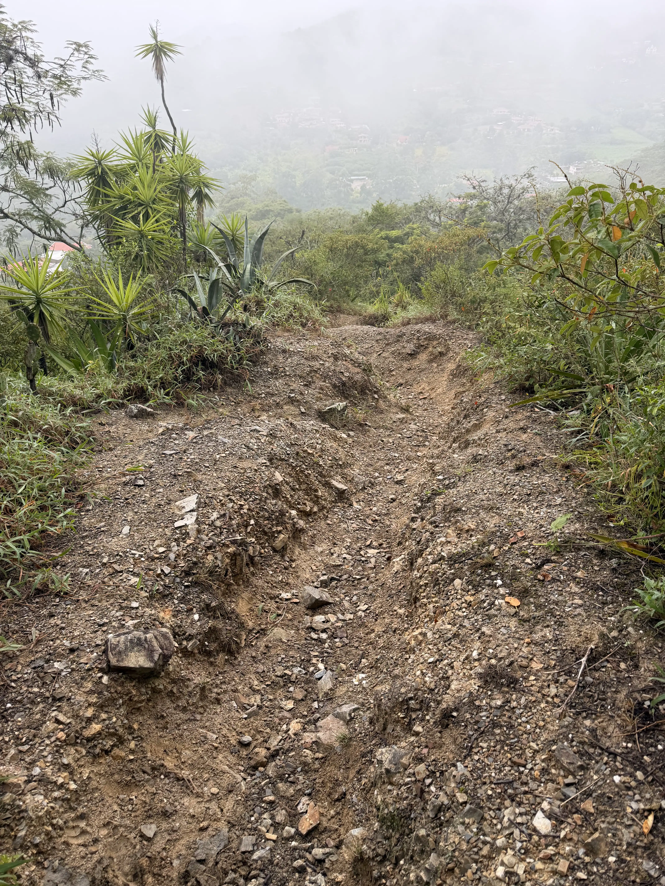
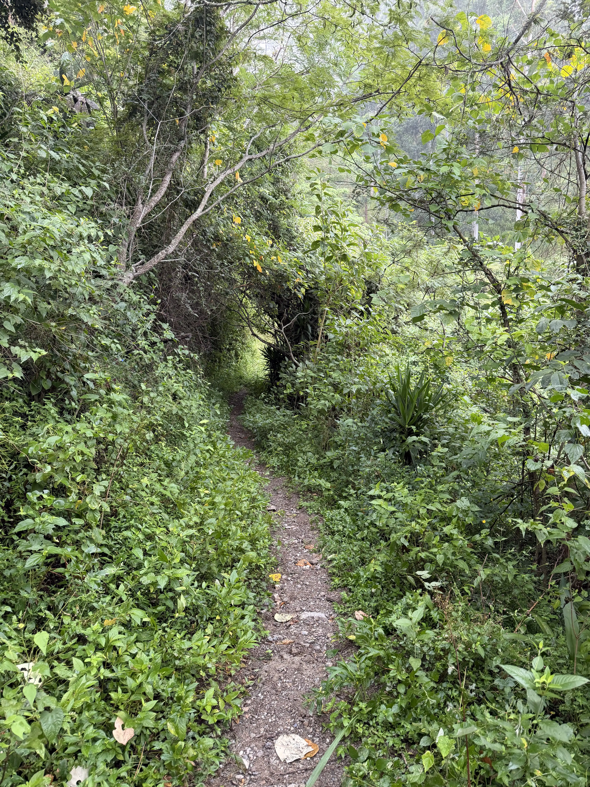

Cerro Yunanga

¡Disfruta de un paseo por la montaña!
El cerro Yunanga, con una altitud de 1.548 metros sobre el nivel del mar, está ubicado al sur de la provincia de Loja en la parroquia de Malacatos. Es uno de los atractivos turísticos más importantes del sector para fomentar el turismo en familia o practicar senderismo. El tiempo promedio es 4 horas de camino con una distancia lineal de 10 kilómetros; dentro del recorrido se pueden encontrar pendientes pronunciadas, vistas hacia el sector de la parroquia, fauna silvestre y la cruz de la leyenda.

Datos del recorrido
- Altura: 1.548 metros
- Latitud: -4.185640
- Longitud: -79.229579
- Tiempo: 3 a 5 horas(inicio barrio Landangui)
- Distancia: 9,70Km
Ubicación
Leyenda del cerro Yunanga
@turismotradicion593 (2023,septiembre 16). Leyenda del Cerro Yunanga. TikTok. EnlaceEn la parroquia de Malacatos, se cuenta una intrigante leyenda que ha capturado la atención de muchos: la historia del Cerro Yunanga. Este cerro, que se erige como el guardián de los barrios El Carmen y Landangui, tiene un trasfondo lleno de misterio y magia.
La leyenda habla de Teófilo, un destacado hechicero que era tanto querido como temido por los habitantes del pueblo de Yunanga, que en tiempos antiguos floreció en esta región. En medio de las tensiones entre la espiritualidad y la hechicería, llegó a Yunanga el padre Leonardo, quien advertía a sus feligreses sobre los engaños de Teófilo. Sin embargo, la devoción del hechicero tenía sus seguidores, lo que culminó en un trágico enfrentamiento durante una misa. Teófilo, actuando por impulso, irrumpió en la iglesia, insultó al padre e incluso le propinó una puñalada en el corazón.
Antes de perder la vida, el padre Leonardo lanzó una maldición, pronosticando que el pueblo desaparecería.
Tres meses más tarde, esa profecía se cumplió cuando Yunanga se hundió por completo. Con el tiempo, un extraño montículo comenzó a emerger, dando origen al Cerro Yunanga, que continuó creciendo sin control, aterrorizando a los vecinos.
Para detener este fenómeno, los habitantes de las áreas circundantes decidieron colocar una gran cruz en la cima del cerro. Una vez concluido este acto, el cerro dejó de crecer. Desde entonces, el 3 de mayo, se celebra la fiesta de la Cruz, marcando este evento con una misa que busca proteger la comunidad de cualquier posible catástrofe asociada al cerro.
Los pobladores creen que al escuchar el repique de las campanas en el cerro, o en el barrio El Carmen, hay un riesgo de que el Yunanga se "desencante", lo que podría llevar a la desaparición de estas localidades. Sin duda, el Cerro Yunanga no solo es un monumento natural, sino también un símbolo cargado de mitos y leyendas que continúan tejiendo historias en la cultura de Malacatos.
Fototeca



